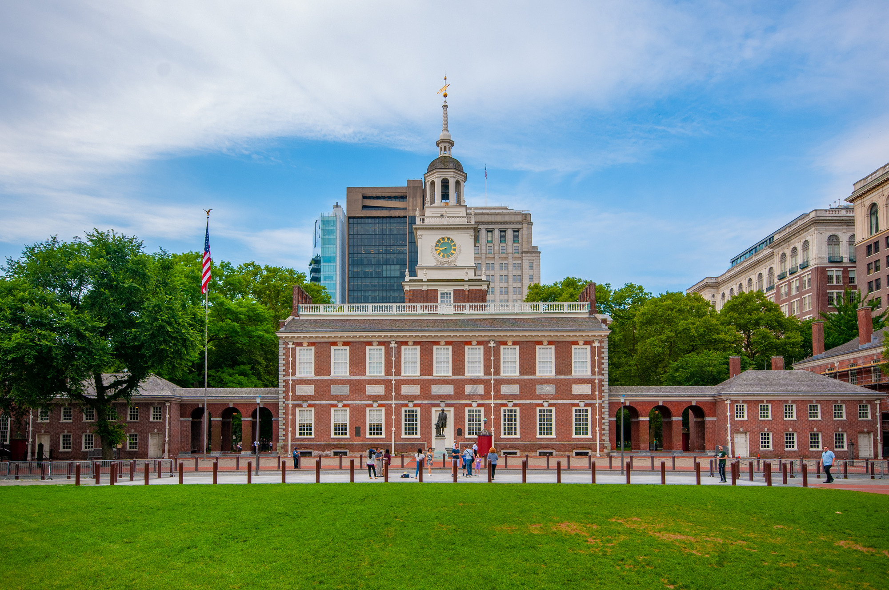
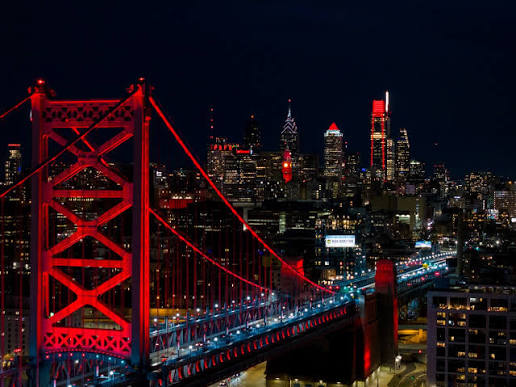
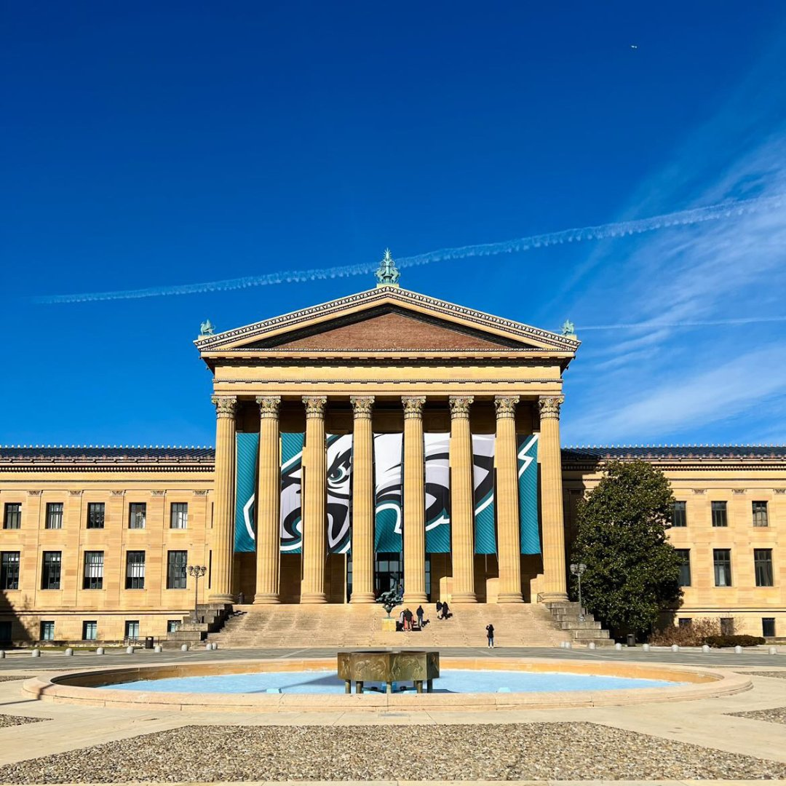
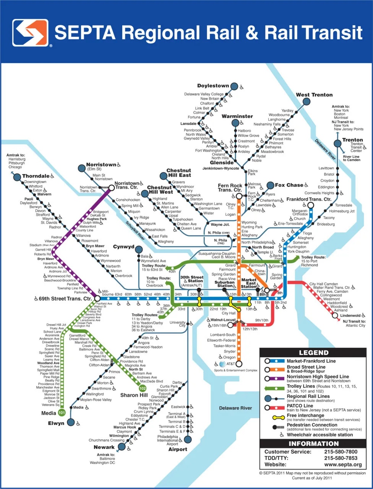

About Philadelphia
Philadelphia is one of the oldest major cities in the United States. The city played an important role in the founding of the country and is known for its historic sites, neighborhoods, food, arts, and culture.
Famous Landmarks


Philadelphia is home to many well-known landmarks, including Independence Hall, the Liberty Bell, Philadelphia City Hall, and the Philadelphia Museum of Art.
Philadelphia Today
Philadelphia continues to be a diverse and active city with museums, restaurants, parks, universities, sports teams, public transportation, and many different communities.

